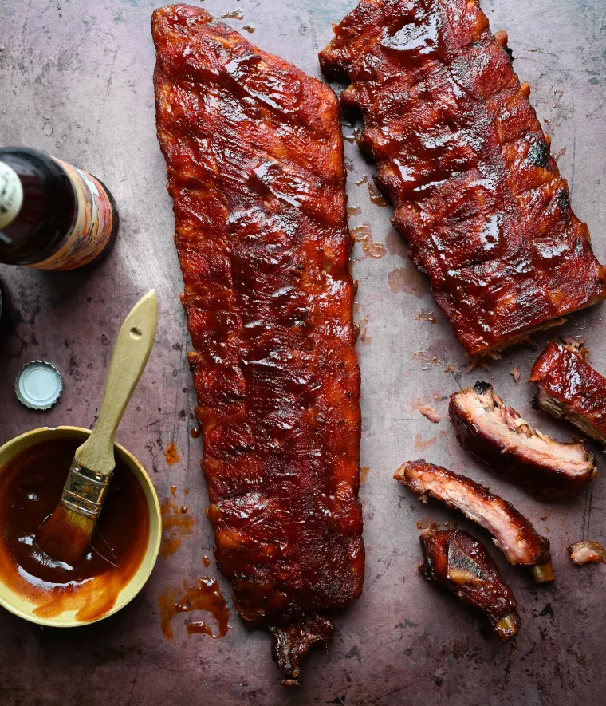

BBQ Ribs

Texas style bbq Ribs
Indulge in the ultimate BBQ experience with our mouthwatering recipe for perfectly cooked and flavorful BBQ ribs. These fall-off-the-bone tender ribs will have your taste buds dancing with delight. Get ready to impress your family and friends at your next cookout!
Delight your senses with our sensational BBQ ribs recipe, designed to take your grilling game to new heights. These succulent and tender ribs are packed with smoky flavors, coated with a lip-smacking barbecue sauce, and cooked to perfection. Whether you're a seasoned grill master or a cooking enthusiast, this recipe will earn you the title of "BBQ champion" among your loved ones. Get ready to embark on a culinary adventure that will leave everyone craving more!
Ingredients
- 2 racks of baby back ribs (about 4 pounds)
- 1 tablespoon brown sugar
- 1 tablespoon parprika
- 1 tablespoon garlic powder
- 1 tablespoon onion powder
- 1 tablespoon chili powder
- 1 teaspoon cayenne pepper (adjust according to spice preference)
- 1 teaspoon salt
- 1 teaspoon black pepper
- 1 cup BBQ sauce (homemade or store-bought)
Steps
- 1 cup BBQ sauce (homemade or store-bought)
- Remove the thin membrane from the back of the ribs by lifting it with a knife or a spoon and peeling it off.
- In a small bowl, combine brown sugar, paprika, garlic powder, onion powder, chili powder, cayenne pepper, salt, and black pepper. Mix well to create a flavorful dry rub
- Evenly coat both sides of the ribs with the dry rub, gently massaging it into the meat. Ensure complete coverage for maximum flavor
- Place the ribs on the grill, bone side down, away from direct heat if using a charcoal grill. If using a gas grill, turn off the burners directly below the ribs.
- Close the grill lid and let the ribs cook for approximately 2.5 to 3 hours or until the meat is tender. Maintain a consistent temperature of around 275°F (135°C).
- During the last 30 minutes of cooking, brush a generous amount of BBQ sauce on both sides of the ribs. Apply multiple layers for a sticky and flavorful glaze.
- To test the ribs for doneness, use a meat thermometer to ensure the internal temperature reaches 190°F (88°C).
- Remove the ribs from the grill and let them rest for 5-10 minutes. This allows the juices to redistribute and the meat to become even more tender.
- Slice the ribs between the bones and serve them hot. Garnish with fresh herbs or a sprinkle of the dry rub for an extra touch of flavor.